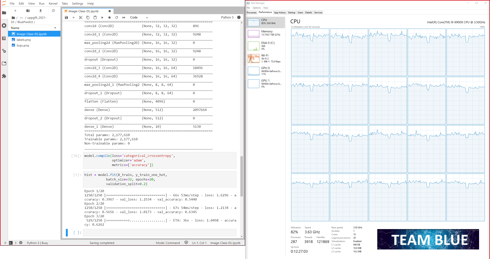

This is how it was done
We will try to describe the steps as non-technical as possible.
For those who are interested in more details or want to see the code itself, the entire project is
available
on GitHub.
The description is divided into the different topics in which we divided the work.
The model
A model represents what was learned by a machine learning algorithm.
It is the "thing" that will be used to determine what an image represents,
and thus also the very heart of the process.
Our model is created with the help of so-called
deep learning,
and more specifically a
convolutional neural network.
The layers
When we create a model for deep learning, we add a number of
layers to an empty model shell, containing different calculations for each layer.
There are also a variety of settings for each layer. This means there is a lot
to test and customize to get the best model possible.
If a model does not perform as expected,
it can often be (but certainly not always) the settings in these layers
that needs to be adjusted. It may also be the case that you should
use completely different layers, a different order of the layers
or a different number of layers. A large number of layers in our
model can therefore give us a lot of settings that we have to specify.
These layers are added to the model, one after another, and together they form a neural network.
Here is a visualization of a very simple neural network, in other words a deep learning model.
This model consists of 5 layers. One input layer, three hidden layers, and one output layer.
Our model has significantly more layers than that, but it is easier to visualize it small.
 Note: In this visualization, all layers are fully connected, which means
that all nodes in one layer are connected to all nodes in the next layer.
That is not the case with the model we created for this site. For
info on which layers we used, we refer to our repository on
GitHub.
Note: In this visualization, all layers are fully connected, which means
that all nodes in one layer are connected to all nodes in the next layer.
That is not the case with the model we created for this site. For
info on which layers we used, we refer to our repository on
GitHub.
The data
Now that we have our model ready with a variety of layers,
how are we going to use this to teach our model what an image represents?
With the help of 50,000 images!
And 50,000 answers to what these pictures represent.
First we downsize the images to the same size.
Then we convert the images into numbers so that the calculations in the layers can handle them,
and then sending all 50,000 images to our model and through all layers, one by one.
This is called "training the model".
Small sample of the 50,000 images
The training
The training of the model is done by sending each image through all
our layers to get a result from the last layer. The result is the answer to what the
model thinks the image represents.
The model's answer is then checked against what the correct answer is.
The settings in the layers are adjusted based on the model's
performance and then the whole process is running over and over again.
To train a model by making decisions based on whether it is
right or wrong like this is called
supervised learning.
This process continues until the model is trained so well that it now with great probability can determine what the images represent. This is a very demanding process that can take a very long time depending on how many images you use, the size of the images, the settings in our layers and of course the power of the computer that performs the training. We used a powerful computer with an i9 CPU and 20 logical processors, and our model took a little over 8 hours to train.
The last step in the training process is to validate our models accuracy score
with some images that our model hos not yet seen.
We use another 10,000 images for this.
The trained models accuracy score and the accuracy score from
our 10,000 unseeen images should match. This means that the model's
expected performance really works.
Our last model got an accuracy score of 86%.
Wow! Great.
The heavy work is now done and we can save the model. We now have a model that, with high probability, can determine what an image represents. However, it must be understood that the model can only predict images similar to the 50,000 images with which it was trained. Our model was trained with pictures of airplanes, cars, birds, cats, deers, dogs, frogs, horses, ships and trucks. If we were to give our model a picture of an elephant, it would have no idea what it is, because it was not trained with any pictures of elephants.
Screenshot from training our first model
The prediction
To make our model available to others, we coded a website where you can use the model. This is the website you are on now.
When a user either uploads an image or enters a URL to an image, that image is downloaded and saved in a folder on the server. On the server, the image is converted into numbers and also into the same shape as the 50,000 images that we used to train the model with.
Bilden skalas sedan bla bla bla... (Beskrivning av Olas metod)
We send each rescaled and mirrored image to the model and in less than a
second it returns a result. Each variant of the selected image runs
through the model one by one and returns a prediction. A calculation based on all
the different predictions is made and what remains is a final prediction.
This is a very important process as an image that is rotated 180 degrees can
give a completely different result.
Prediction of a cat
Same image turned 180 degrees
That's it
Just like you, we also find deep learning very complicated and often difficult
to describe or visualize. But this challenge is also what makes us love it.
Thank you for your interest in our model.
"-Never stop learning, because life never stops teaching"